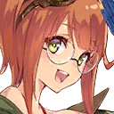
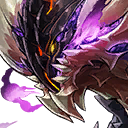
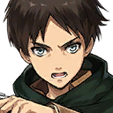
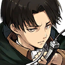
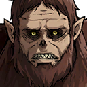

|
 |

Judith |
Here I go! Huuuzzzzaaaaaahhhhhhh! |
Judith |
Haaa...haaaaa... I can't...do it. The Mecha Weapon isn't...dealing enough...damage. |
Judith |
Unngghhh! The miasma! This is bad! Huh...? |
Judith |
What's that? The back of the Giant Taurus' neck is...glowing? |
Judith |
Unnnnnggghhh! |
| ??? |
Armed-Leap Assault!!! |

Giant Taurus |
Grrrrrrrrrrroooooooaaaaaaaarrrrrrrrrgggggghhhhhhhh! |
Hange |
Now! Get the miasma! |
Judith |
H-huh?! |

Tehre |
Well? Did it work? |
Hange |
Perfectly! I got a skin sample from the neck area, too! I'll go and examine it right now! |

Victor |
Ah! The Giant Taurus is getting away! |
| Bud |
Stop! Victor! There's no need to be reckless! It'll come back, one way or another! |
| Bud |
Got it?! So calm down, you idiot! |
Victor |
You're the idiot! Idiot! |

Kazahaya |
Still kicking, Judith? |

Basheeny |
Thank the gods! It looks like we made it just in time. |
Judith |
Y-you! Why...? |
Basheeny |
I'm sorry about before. |
Judith |
Huh? |
Basheeny |
I kept pushing myself too hard because I wanted to be the perfect Lord Commander. |
Basheeny |
I want to protect everyone that I possibly can. If I do that, I will be upholding the justice of the continent. That's enough for me. |
Judith |
... |
Basheeny |
Your father's blood is on our hands. Nothing can change that... |
Basheeny |
But right now, defeating the Giant Taurus is our top priority. |
Basheeny |
I want your help with that. No... I need it. This is something that only you can do. I'm counting on you, Judith. |
Judith |
Ah! |
Judith |
Wh-what's all this, all of a sudden?! |
Judith |
If you'd said that just a little earlier, then my dad, h-he... He might not have...! |
Basheeny |
I'm sorry. I have no words. |
Hange |
All right! I figured it out! |
Hange |
You! When you attacked and cracked that bit off the Giant Taurus, I figured it out! |
Basheeny |
Wh-what...? |
Hange |
What's with you?! This is fantastic! Where's Tehre?! |
Tehre |
Have you figured it out?! |
Hange |
You bet I did! This bit that Tehre had, this piece that Judith cut off... |
Hange |
And this last bit we just got our hands on! |
Hange |
It's all come together! There's absolutely no doubt about it! This neck part, you know, it's totally like—! |
Tehre |
The Alchemia was particularly concentrated in those areas? |
Hange |
Yes! Exactly! |
Tehre |
I see! Thank you, Hange! This is going to have a huge impact on our effectiveness in battle! |
Basheeny |
Are you certain?! |
Tehre |
Yes. With these materials, we should be able to... Hmmm. Judith? |
Judith |
Yes? |
Tehre |
If the Giant Taurus is defeated, your father's hopes will be answered, correct? |
Judith |
Tehre... |
Tehre |
There's no time to explain in detail, but if we destroy the core of the Giant Taurus, we should be able to defeat it. |
Tehre |
There is no doubt about it: the core of the Giant Taurus is on its neck. Did you notice anything about it during the battle? |
Judith |
Now that you ask... I remember that when the miasma was expelled, something on the back of its neck glinted! |
Tehre |
That must be it! Then the core is on the back of its neck! |
| Bud |
Great! Now we know what to do! Weird that both the Titan and the Giant Taurus have the same weak point. |
Tehre |
I believe that we have also discovered how to send all of you back to your home world. |
Judith |
You think it has something to do with the Giant Taurus? |
Tehre |
Yes, I do. In fact, I believe that it has something to do with specifically this Giant Taurus that is here in Saga. |
Tehre |
Every time it roars, the air itself vibrates strongly in response. |
Tehre |
Then, the Alchemia contained within the Giant Taurus' body is influenced by the vibrations of the air. |
Tehre |
I suspect that is how the Titans were called here from another world. Those vibrations connected to another space and time and brought them. |
Judith |
Why only this Giant Taurus? |
Tehre |
Recently, the balance of nature in Saga was torn asunder. As a result of that instability, both great and terrible things become possible. |
Tehre |
Just talking about it is frustrating... I want to bring all this to a quick end. |
Judith |
I'm sorry. I don't understand how this is connected to sending them back to their world. |
Tehre |
We must overwhelm the Giant Taurus' core with Alchemia and connect this world to theirs. |
Tehre |
It is very possible that in the process of returning to their world, they will lose their memories, however. |
Hange |
Huh? Is that some kind of multi-universe defense system or something? |
Tehre |
No, it's nothing like that. Simply put, once the balance is restored, all traces of the previous imbalance will be erased. |
Hange |
Ah. That makes sense. Well, that's only something to worry about once we've actually managed to connect our worlds. |
Tehre |
Yes. Our first problem is figuring out how to best combat the Taurus. |
Basheeny |
Judith, please, could you lend us your strength? There's no way we can do this without you and your Mecha Weapon. |
Basheeny |
That's the only way that we can stop this all now, before anyone else gets hurt. |
Judith |
B-but I...! |
Kazahaya |
Don't you want to claim your father's justice by protecting that man? |
Judith |
Reiner... |
Judith |
I'm not a fan of the way you're manipulating me, but...I'll show you that I can take care of this with a swoosh! |
Victor |
Whoa! That Titan is crazy huge! |
Basheeny |
We have no choice! We must figure out some way to deal with it! |
| Bud |
Look! That Titan's not our only problem! |
Victor |
What?! They multiplied?! What're we gonna do against this horde of giant monsters?! |
Judith |
No...! |
Hange |
It's not over yet! Hey, everyone! Sorry to have kept you waiting! |
Judith |
You came! |
Hange |
I did some tinkering using that miasma from the Giant Taurus. |
Hange |
The results of my experimentation mean that we can fight just like we always have! The ODM gear is back in the game! |

Eren |
Those hulking nuisances are from our world. It's our job to deal with them. |

Levi |
Listen. We'll deal with this Reiner ordeal later. |
Levi |
We need to handle your world's problems while in your world. |
Levi |
We'll settle things with Reiner once we're back in our own world. |
| Eren - Mikasa |
Right! |

Beast Titan |
Graaaaaaaaaaaaaaaaaaaaah! |
Hange |
There's no time! Judith! |
Basheeny |
Bud! Victor! We can't let them show us up! |
| Bud |
Right! |
Victor |
Let's go! |
Levi |
Eren, I authorize you to bring forth your Titan form. We just need to get through this. |
Eren |
Got it! We're counting on you, Judith! Raaaaaaaaaaaaaaaawr! |
Judith |
Eren...is a Titan?! |
Hange |
It's complicated. There's a lot going on in our world... Too hard to explain. |
Hange |
Your job is to focus on being ready when the time comes to bring the Giant Taurus down. Take care of yourself until then. |
Hange |
It's our turn to show off! |